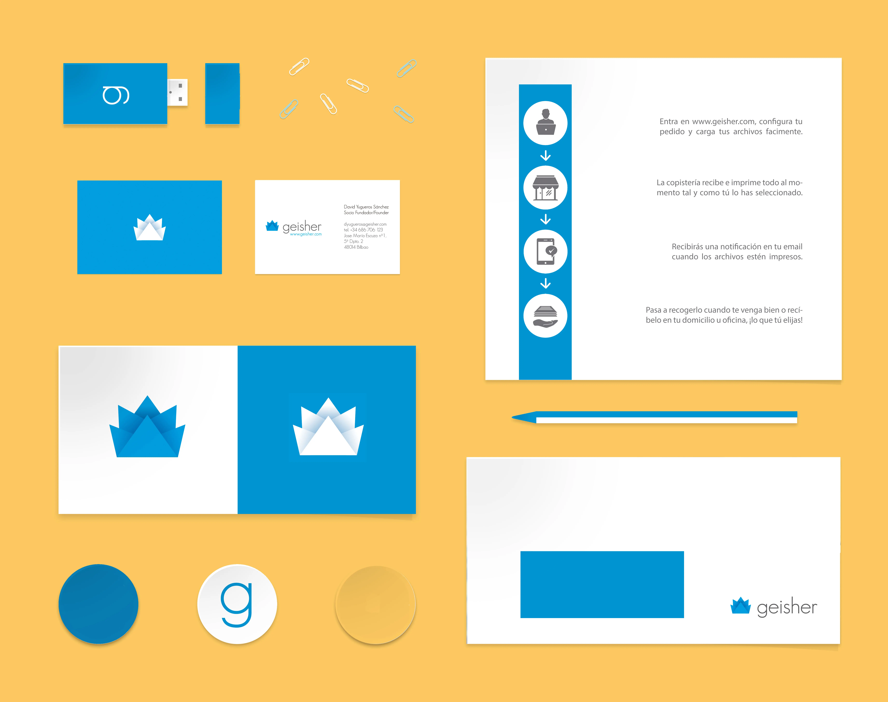
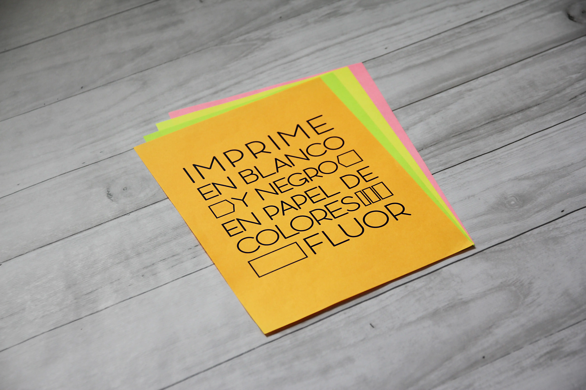
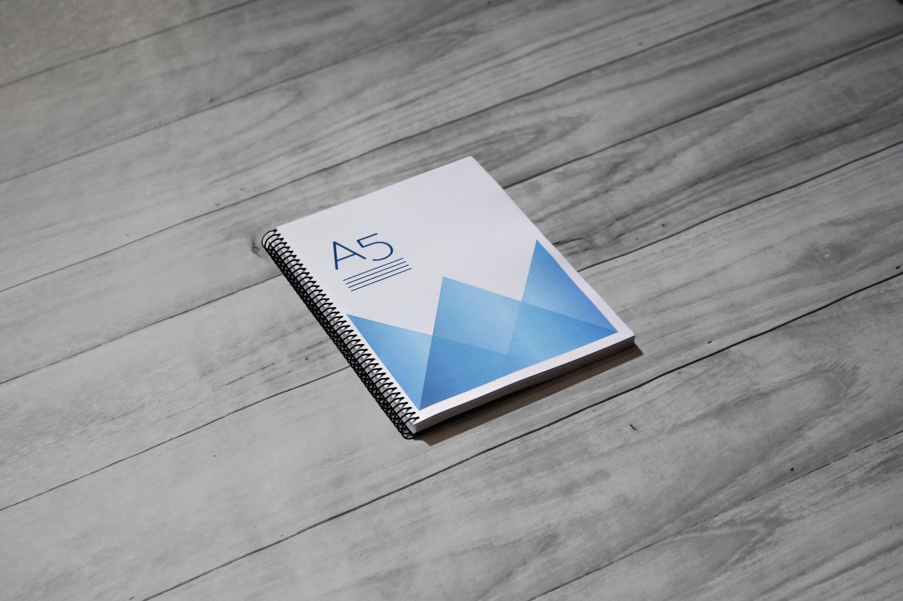
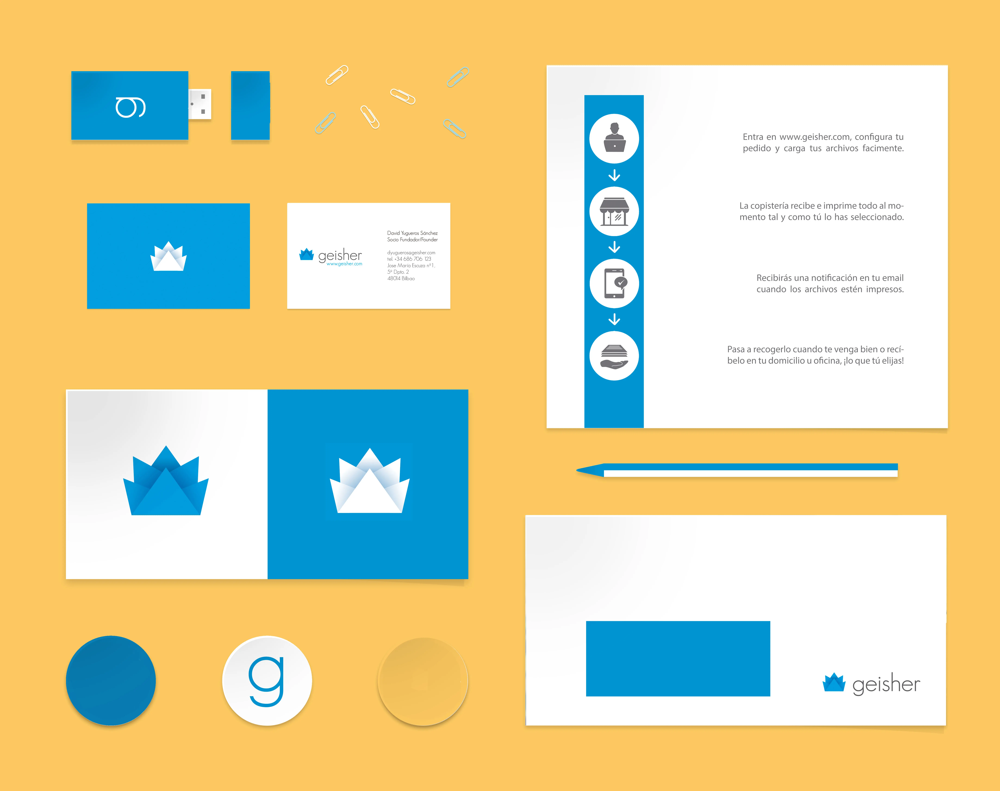
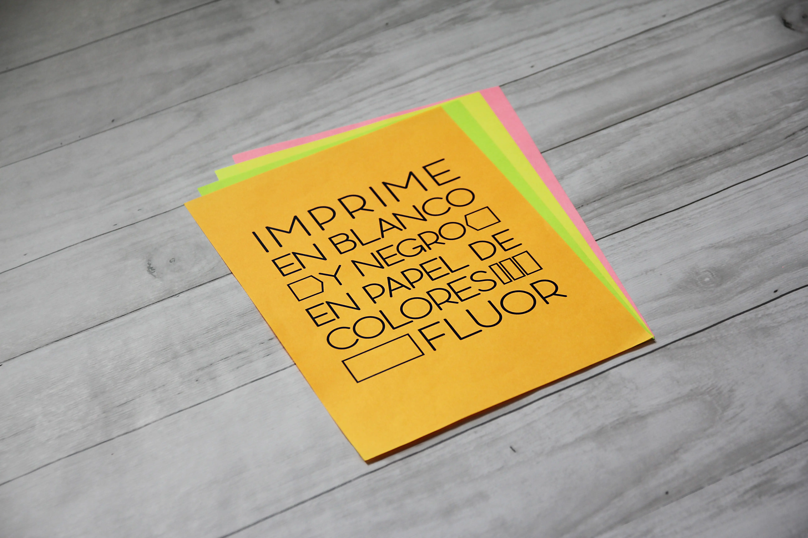
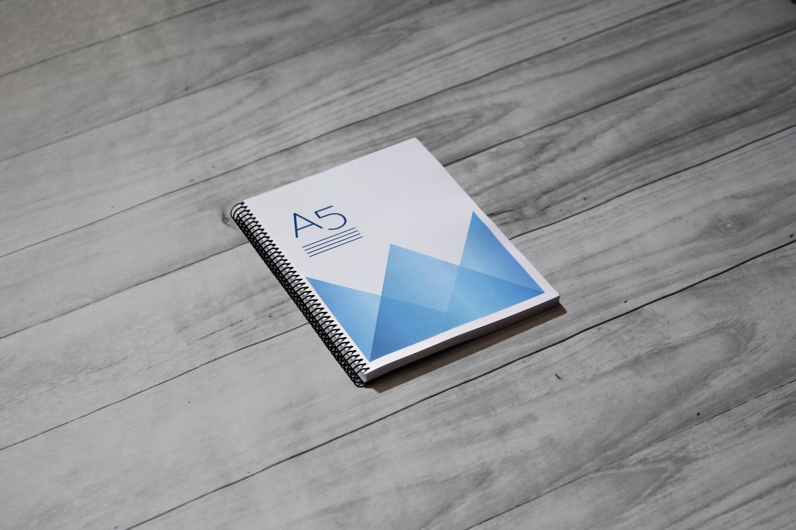

Geisher Printers
Desarrollé la identidad visual de esta imprenta online creada por un emprendedor euskaldun, con el objetivo de conectar con un público joven, principalmente universitario.
Apostamos por una estética cercana y dinámica, con colores vivos e ilustraciones originales que transmiten energía, accesibilidad y buen humor.
La marca está pensada para destacar en entornos digitales, reflejando un servicio ágil, cómodo y actual: impresión online con entrega directa a domicilio o a la propia facultad. Una propuesta fresca para quienes valoran lo práctico, sin renunciar al diseño.
 




